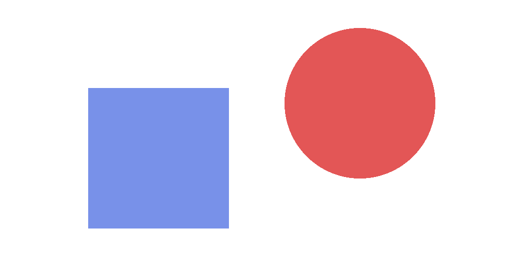

Lecture 6. Variables whose value changes, and the commands that change them.
Programming Languages Lab · University of Pisa
Vincenzo Ciancia, CNR-ISTI
vincenzo.ciancia@isti.cnr.it · github.com/vincenzoml/PLDW
Lecture 5, exercise 3
let
let x = 1, y = 2 in x + y 3
let x = 1, y = x + 1 in x * y ?
The assignment, from Lecture 5
evaluate to allow several bindings in one let.Lets?
?expr: let | arith
let: "let" binding ("," binding)* "in" expr
binding: IDENTIFIER "=" expr
A let has one binding, then any number of others, each after a comma.
( ... )* means "zero or more times", as in regular expressions. With zero, it is the let of Lecture 5.
The parse tree of a let has one binding node per name, and the body as its last child.
The rest of the grammar does not change.
\( ⟦\mathtt{let}\ x_1 = e_1, x_2 = e_2\ \mathtt{in}\ e⟧\rho \ = \ \ ? \)
SEQUENTIAL
\( ⟦\mathtt{let}\ x_1 = e_1\ \mathtt{in}\ \mathtt{let}\ x_2 = e_2\ \mathtt{in}\ e⟧\rho \)
e₂ sees x₁. The second line gives 2.
SIMULTANEOUS
\( ⟦e⟧\big(\rho[x_1 \mapsto ⟦e_1⟧\rho,\ x_2 \mapsto ⟦e_2⟧\rho]\big) \quad x_1 \neq x_2 \)
Both definitions are computed in \( \rho \), and both names are bound at once. The second line gives Undefined identifier: x.
let x = 1, x = 2 in x gives 2 if sequential. If simultaneous it is an error: \( x \) cannot have two values at once.
Scheme has both: let* is sequential, let is simultaneous. OCaml's let ... and ... is simultaneous. Both reject a name bound twice at once.
State
let cannot doPython
count = 0
count = count + 1
count = count + 1
print(count) # 2
Our language
let count = 0 in
let count = count + 1 in
let count = count + 1 in
count # 2
The results are the same, but on the right there are three names count, each bound once. In Python there is one count, and its value changes twice.
In Lecture 5: a name, once bound, stands for the same value in all of its scope.
let a = 17 * 23 in
let b = a * a in
b - a
A program in our language computes one number, and the REPL prints it.
To see a and b too, we need three programs. The language has no way to say "show this, and go on".
Both limits have the same cause: an expression is computed for its value, and leaves nothing behind.
EXPRESSION
Is evaluated. It gives a value. Computed twice in the same place, it gives the same value.
evaluate(e, env) -> value
COMMAND
Is executed. It gives no value: it changes the memory, or shows something.
execute(c, env, state) -> (env, state)
Today the language gets three commands and a way to put them one after the other. The interpreter gets a second structure next to the environment: the store, its memory.
The code of this lecture is in code/lesson-06/: state.py.
Syntax
var x = 10;
var y = x + 5;
print y;
x <- y * 2;
print x
15
30
| command | meaning |
|---|---|
var x = e | a new variable x, holding the value of e |
x <- e | from now on, x holds the value of e |
print e | shows the value of e |
c₁; c₂ | c₁, then c₂ |
The semicolon goes between two commands. There is none after the last one.
<- and not =
let x = 3 in ... x stands for 3
var x = 3 x is a new variable, holding 3
x <- x + 1 what x holds changes
In our language = already says what a new name stands for, in let and in var.
The arrow shows the direction: the value of the right side goes into x. Read as an equation, x = x + 1 is false.
Pascal and the IMP language of the theory lectures write x := e, R writes x <- e, APL x ← e. C, Java and Python use =, and == for equality.
grammar = r"""
sequence: command | command ";" sequence
?command: vardecl | assign | print
vardecl: "var" IDENTIFIER "=" expr
assign: IDENTIFIER "<-" expr
print: "print" expr
?expr: let | arith
... # as in Lecture 5
IDENTIFIER: /(?!(let|in|var|print)\b)[a-zA-Z_][a-zA-Z0-9_]*/
"""
parser = Lark(grammar, start="sequence")
A program is a sequence: one command, or a command, a semicolon, and a sequence.
The rules for expressions are those of Lecture 5. Commands are a new level, above them.
var and print become reserved words, like let and in. The parser starts from sequence.
print (x <- 3) syntax error
var x = 1; x <- x <- 2 syntax error
var x = 1; let y = 2 in y syntax error
A command contains expressions; an expression never contains a command.
An expression alone is not a command either: the third program has nothing to do with the value of let y = 2 in y.
So computing an expression never changes the memory. It only reads it.
In C, x = 3 is also an expression, whose value is 3: y = (x = 3) + 1 is a C program. Python added (x := 3) in version 3.8. Then the order in which the operands are computed can change the result.
@dataclass(frozen=True)
class VarDecl:
name: str
expr: Expression
@dataclass(frozen=True)
class Assign:
name: str
expr: Expression
@dataclass(frozen=True)
class Print:
expr: Expression
type Command = VarDecl | Assign | Print
Three nodes, one per command. The expressions are the nodes of Lecture 5: Number, Var, BinaryExpression, Let.
In VarDecl and Assign the name is a string, as in Let: 3 <- x is not a program.
@dataclass(frozen=True)
class Sequence:
first: Command
rest: Sequence | None = None
def transform_sequence(tree: Tree) -> Sequence:
match tree:
case Tree(data="sequence", children=[command]):
return Sequence(first=transform_command(command))
case Tree(data="sequence", children=[command, rest]):
return Sequence(
first=transform_command(command),
rest=transform_sequence(rest),
)
A first command, and the rest of the program, which is again a Sequence, or nothing.
The same shape as the grammar rule, so the transformation has one case per alternative.
A Python list[Command] would work too. The chain lets us define the meaning of c; rest from the meaning of c and of rest, with one equation.
sequence
vardecl
x
mono
ground 1
sequence
print
mono
var x
Sequence(
first=VarDecl(name='x',
expr=Number(value=1)),
rest=Sequence(
first=Print(expr=Var(name='x')),
rest=None))
The parse tree of var x = 1; print x, from parser.parse(...).pretty(), and the AST built from it.
Semantic domains
case Assign(name, expr):
value = evaluate(expr, env)
return bind(env, name, value) # ?
x <- e could make a new environment where x stands for the new value, and pass it to the next command.
For today's programs, which are a list of commands, this would work.
It stops working when something keeps an environment to use it later. In Lecture 4 and 5 that was a closure: a pair of an expression and its environment.
x = 3
f = lambda: x + 1
x = 10
f() # 11
The same Python program as in Lecture 5. f keeps the environment where it was written, and it still sees the new value of x.
If x = 10 made a new environment, the one kept by f would still say 3.
So the environment kept by f does not contain the value of x. It contains where the value is. What is there can change.
After var x = 10; var y = x + 5, while computing the body of a let k = 2 in .... The environment says what each name stands for. A variable stands for a location ℓ; the store says what each location holds.
An assignment changes the store and leaves the environment as it is: x stays at ℓ0.
\( ⟦x⟧(\rho, \sigma) = \sigma(\rho(x)) \)
x, then \( \sigma \) says what is there now.This is for a name declared with var. A name bound by let stands for a value directly, as in Lecture 5: \( ⟦x⟧(\rho,\sigma) = \rho(x) \).
\( ⟦x \mathrel{\texttt{<-}} e⟧(\rho, \sigma) = \big(\rho,\ \sigma[\rho(x) \mapsto ⟦e⟧(\rho, \sigma)]\big) \)
x.e is computed with the old store: in x <- x + 1, the x on the right is the old one.\( \sigma[\ell \mapsto v] \) is the store that says \( v \) at \( \ell \), and the same as \( \sigma \) everywhere else: the notation of bind, for locations.
IMP x := a σ : variables → numbers
ours x <- e ρ : names → values, operators, locations
σ : locations → values
In IMP there is one map: the memory \( \sigma \) goes from variables directly to numbers, and x := a changes it. That is enough for IMP, where every name is a variable and every variable exists from the start of the program.
Our language also has let, whose names are not variables, and declarations, which create variables while the program runs. So we keep the two maps apart.
@dataclass(frozen=True)
class Loc:
address: int
type EVal = int # what an expression can produce
type MVal = EVal # what a location can hold
type Operator = Callable[[EVal, EVal], EVal]
type DVal = EVal | Operator | Loc # what a name can stand for
type Environment = Callable[[str], DVal]
Three sets of values, with three names.
| set | today | example |
|---|---|---|
expressible EVal | integers | the value of x + 1 |
storable MVal | integers | what ℓ0 holds |
denotable DVal | integers, operators, locations | k, +, x |
No expression gives a location: our language has no pointers. No variable can hold an operator. The three sets will grow in different ways.
Loc is not a bare int
match lookup(env, name):
case Loc() as loc: # a variable
...
case int() as value: # a name bound by let
...
If a location were the integer 3, the evaluator could not tell "the value 3" from "the location 3".
Wrapping the address in a class of its own costs one line, and the pattern matching sees the difference.
type Store = Callable[[int], MVal]
@dataclass(frozen=True)
class State:
store: Store
next_loc: int
def empty_state() -> State:
def store(address: int) -> MVal:
raise ValueError(
f"Location {address} is not allocated")
return State(store=store, next_loc=0)
The store is built like the environment of Lecture 4: a function, from addresses to values.
The state is the store together with the first address not used yet, next_loc. A new variable gets that address.
The empty store has no location: asking it anything is an error.
def access(state: State, loc: Loc) -> MVal:
return state.store(loc.address)
def update(state: State, loc: Loc, value: MVal) -> State:
def new_store(address: int) -> MVal:
if address == loc.address:
return value
return state.store(address)
return State(store=new_store, next_loc=state.next_loc)
def allocate(state: State, value: MVal) -> tuple[Loc, State]:
loc = Loc(state.next_loc)
state = update(state, loc, value)
return loc, State(store=state.store, next_loc=loc.address + 1)
access reads a location. update makes a new state that differs from the old one at one location.
allocate takes the next free location, puts a value in it, and moves next_loc forward by one.
None of them changes the state it receives: they return a new one.
update and bindLecture 4: the environment
def bind(env, name, value):
def new_env(n):
if n == name:
return value
return env(n)
return new_env
Today: the store
def update(state, loc, value):
def new_store(address):
if address == loc.address:
return value
return state.store(address)
return State(new_store, state.next_loc)
The same function: one answers for a name, the other for an address. Environment and store are built in the same way.
What makes them different is how the interpreter passes them from one part of the program to the next. That is the next section.
memory = []
memory.append(10) # var x = 10, cell 0
memory.append(20) # var y = 20, cell 1
memory[0] += 1 # x <- x + 1
print(memory[0]) # print x
The memory of a computer is an array of cells, and an address is an index into it. Our locations 0, 1, 2, ... are indices in the same way.
| store | array |
|---|---|
Loc(i) | the index i |
access | memory[i] |
update | memory[i] = v |
allocate | memory.append(v) |
next_loc | len(memory) |
In Lecture 4 the same question came up for the environment: why not a dictionary, a hash table from names to values? We kept a function, because \( \rho \) is a function in the equations, and the code should say the same thing.
For the store, the reason is the same: \( \sigma \) is a function in the equations. update gives a new store and leaves the old one as it was, as bind does with the environment.
The price: an array reads a cell in one step, while access goes through one function per update made so far. For programs of a few hundred commands, it does not matter.
Semantics
def evaluate(ast: Expression, env: Environment,
state: State) -> EVal:
match ast:
case Number(value):
return value
case Var(name):
match lookup(env, name):
case Loc() as loc:
return access(state, loc)
case int() as value:
return value
case _:
raise ValueError(
f"{name} is an operator, not a value")
case BinaryExpression(op, left, right):
... # as in Lecture 5, with state
case Let(name, definition, body):
value = evaluate(definition, env, state)
return evaluate(body, bind(env, name, value), state)
evaluate takes one more argument, the state, and still returns only a value.
The state is passed down unchanged to every recursive call: no expression changes it.
The only case that is really new is Var: a location is looked up again, in the store.
def execute(command: Command, env: Environment,
state: State) -> tuple[Environment, State]:
match command:
case VarDecl(name, expr):
value = evaluate(expr, env, state)
loc, state = allocate(state, value)
return bind(env, name, loc), state
case Assign(name, expr):
loc = lookup(env, name)
if not isinstance(loc, Loc):
raise ValueError(f"{name} is not a variable")
value = evaluate(expr, env, state)
return env, update(state, loc, value)
case Print(expr):
print(evaluate(expr, env, state))
return env, state
A command returns no value: it returns the environment and the state for the commands that come after it.
Each case computes its expression with evaluate, in the environment and state it received.
print is Python's: it is how the interpreter shows something on the screen.
| command | environment | store | screen |
|---|---|---|---|
var x = e | x → a new location | the new location holds the value of e | — |
x <- e | — | the location of x holds the value of e | — |
print e | — | — | the value of e |
A declaration changes both maps. An assignment changes only the store: x stays at the same location, and the location holds something else.
The screen is not part of the state: print returns the same environment and state it received.
\( ⟦\mathtt{var}\ x = e⟧(\rho, \sigma) = \big(\rho[x \mapsto \ell],\ \sigma[\ell \mapsto ⟦e⟧(\rho, \sigma)]\big) \)
\( ⟦x \mathrel{\texttt{<-}} e⟧(\rho, \sigma) = \big(\rho,\ \sigma[\rho(x) \mapsto ⟦e⟧(\rho, \sigma)]\big) \)
\( ⟦\mathtt{print}\ e⟧(\rho, \sigma) = (\rho, \sigma) \quad \text{and } ⟦e⟧(\rho, \sigma) \text{ is shown} \)
next_loc: allocate is the code for \( \sigma[\ell \mapsto ...] \).\( ⟦c;\ s⟧(\rho, \sigma) = ⟦s⟧\big(⟦c⟧(\rho, \sigma)\big) \)
def execute_sequence(sequence: Sequence, env: Environment,
state: State) -> tuple[Environment, State]:
env, state = execute(sequence.first, env, state)
if sequence.rest is None:
return env, state
return execute_sequence(sequence.rest, env, state)
def run(text: str) -> None:
execute_sequence(parse_program(text),
create_initial_env(), empty_state())
Execute the first command; execute the rest starting from what it returned.
The environment made by a declaration goes on to the following commands: in var x = 10; var y = x + 5, the second declaration sees x.
So a variable is visible from its declaration to the end of the program.
var x = 10; x <- x + 1; print x| after | environment | store | screen |
|---|---|---|---|
| start | \( \rho_0 \): the operators | \( \sigma_0 \): empty, next 0 | |
var x = 10 | \( \rho_1 = \rho_0[x \mapsto \ell_0] \) | \( \sigma_1 = \sigma_0[\ell_0 \mapsto 10] \), next 1 | |
x <- x + 1 | \( \rho_1 \) | \( \sigma_2 = \sigma_1[\ell_0 \mapsto 11] \) | |
print x | \( \rho_1 \) | \( \sigma_2 \) | 11 |
In x <- x + 1, the right side is computed in \( (\rho_1, \sigma_1) \): \( \sigma_1(\rho_1(x)) + 1 = 10 + 1 \).
access(σ2, ℓ0) stops at σ2, which answers 11. The 10 is still in σ1, and σ1 still exists: nothing was overwritten.
The same picture as the chain of environments in Lecture 5, with addresses in place of names.
var x = 10; print x; x <- 20; print x
var x = 10; var y = 20; var z = x + y;
print z; x <- 30; print x + y; print z
10
20
30
50
30
In the second program z does not follow x. var z = x + y computed x + y once, when it was executed, and put 30 in the location of z.
A variable holds a value, not the expression that computed it.
let and var together
var x = 1;
print let x = 5 in x;
print x
5
1
Inside the body of the let, x stands for the integer 5, and hides the variable.
After the body, the environment is the one of the print command again: x is the variable, and its location still holds 1.
A name bound by let has no location: it cannot be assigned. With today's grammar there is no way to try, because <- cannot appear inside an expression.
var x = 10;
print x; 10
x <- 20;
print x 20
In Lecture 5, an expression computed in the same environment always had the same value.
Here the two print x have the same environment, \( \rho_1 \), and print two different values: the store changed between them.
The value of an expression now depends on when it is computed. Between two assignments, it is still the same.
var x = 1;
var x = 2;
print x
2
Two declarations, two locations: \( \ell_0 \) holds 1 and \( \ell_1 \) holds 2.
The second x shadows the first, as with let. From then on \( \ell_0 \) cannot be reached by any name, but it is still in the store.
Many languages make the second declaration an error. Here it is allowed; exercise 2 asks you to forbid it.
Errors
x <- 1
print y
var x = 1; x <- 1 / 0
Undefined identifier: x
Undefined identifier: y
Division by zero
An assignment to a name that was never declared fails in lookup, before anything else: the message is the one of the environment.
case Assign(name, expr):
loc = lookup(env, name) # 1
if not isinstance(loc, Loc):
raise ValueError(f"{name} is not a variable")
value = evaluate(expr, env, state) # 2
return env, update(state, loc, value) # 3
First find the location, then compute the value, and only at the end make the new state.
In x <- 1 / 0 the error comes at step 2. No new state is made, and the old one is untouched.
Each error is raised where its cause is. A try around the whole case, reporting "assignment failed", would hide which of the three steps went wrong.
print 1; print (x <- 3)
syntax error: No terminal matches '<' in the current parser context, at line 1 col 19
The 1 is never printed. run parses the whole program before executing any command.
A program with a syntax error does nothing at all.
Python does the same with a file: a syntax error on the last line stops the first line from running.
def run_session(lines: list[str]) -> None:
env, state = create_initial_env(), empty_state()
for line in lines:
print(f"> {line}")
try:
env, state = execute_sequence(
parse_program(line), env, state)
except ValueError as e:
print(e)
run_session(["var x = 1",
"x <- x + 1; print x",
"var y = x * 10; print y"])
Each line is a program, executed in the environment and the state left by the previous lines.
> var x = 1
> x <- x + 1; print x
2
> var y = x * 10; print y
20
run_session does what the REPL in the file does, with a list of lines in place of the keyboard.
Summary
| decision | alternative | why |
|---|---|---|
x <- e | x = e, x := e | = already means "stands for" |
| commands contain expressions, not the other way round | assignment as an expression, as in C | computing an expression never changes the state |
| environment and store | one map, as in IMP | let names are not variables; closures keep where a value is |
Loc as its own type | a bare int | pattern matching tells a location from a value |
| the store as a function | an array changed in place | same as σ in the equations |
a second var x makes a new location | an error | the same rule as for let: shadowing |
print outside the state | the output as part of the state | a simpler state |
PARSER
sequence: command
| command ";" sequence
?command: vardecl | assign | print
vardecl: "var" IDENTIFIER "=" expr
assign: IDENTIFIER "<-" expr
print: "print" expr
DOMAINS
class Loc:
address: int
class State:
store: Store
next_loc: int
access, update, allocate
INTERPRETER
evaluate(e, env, state)
-> value
execute(c, env, state)
-> (env, state)
execute_sequence(s, env, state)
The full code is in code/lesson-06/state.py.
A program can now declare variables, change them, and print. A variable stands for a location in the environment; the store says what the location holds.
Where a name is valid still comes from the text: the body of its let, or the commands after its var. What a location holds comes from the run: the last assignment executed before it is read.
Every program is still a straight line: each command is executed once, in the order it is written. Control flow comes next: if to skip commands, while to repeat them.
Exercises
var a = 1; var b = a + 1; a <- b * 10; print a + b
var x = 5; var y = x; x <- x + 1; print y
var n = 3; print let n = n * n in n + 1; print n
var k = 1; k <- let k = 10 in k + 1; print k
var m = 2; print m; m <- m / (m - 2); print m
print 1; let q = 2 in q
Today's interpreter: code/lesson-06/state.py
Level 1 of 4
let.
var x; x <- 4; print x * x 16
var x; print x + 1 ?
var x = 1; var x = 2 x is already declared
Level 2 of 4
var x, a declaration without a value. Decide what the new location holds: a default value, or nothing, so that reading x before the first assignment is an error. Implement your choice.var x = 1; print let x = 5 in x; var x = 2 be an error too? Why?
var x = 1; alias y = x; y <- 7; print x 7
var x = 0;
alias y = x;
x <- x + 1;
y <- y + 1;
var z = y;
x <- x + 1;
print y + z ?
Level 3 of 4
alias y = x, where x is a variable: after it, y stands for the same location as x.alias change?Two names for one location are called aliases. Without the two maps, they could not be written at all.
var row = scale(circle, 0.5);
row <- row | row; row <- row | row;
print row
var p = load("sky.png"); p <- circle & p;
print p; p <- mirror(p); print p
var a = circle; var b = square; var t = a;
a <- b; b <- t; print a | b
Level 4 of 4 · a longer one
The language of images of Lecture 5, exercise 5, with today's commands. print(a) becomes the command print a.
| command | meaning |
|---|---|
var x = e | a new variable, holding the image e |
x <- e | from now on, x holds the image e |
print e | opens a window with the image e |
c₁; c₂ | c₁, then c₂ |
Start from your solution, or from imagelang.py. What should circle <- square do?

What each print shows. A solution is in code/images/imagestate.py: run it with --show to open the windows.